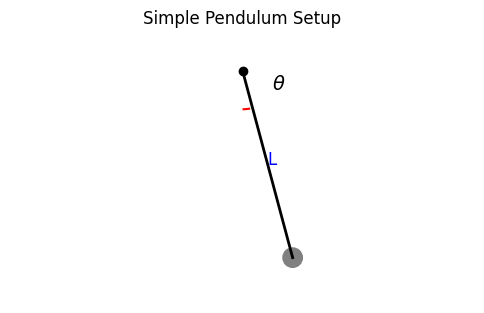
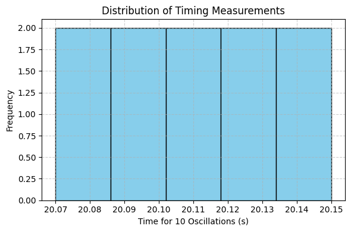

Problem 1: Measuring Gravitational Acceleration with a Pendulum
Objective
The goal of this experiment is to determine the local gravitational acceleration \( g \) using a simple pendulum and to perform a detailed uncertainty analysis. This exercise emphasizes the importance of precision in measurements and the treatment of experimental uncertainties.
Materials
| Item | Description |
|---|---|
| String | 1.000 meters long |
| Weight | A small, dense object (e.g., keychain) |
| Stopwatch | Smartphone timer, resolution ±0.01 s |
| Ruler/Tape | 1 mm resolution, uncertainty ±0.005 m |
Experimental Setup
- The pendulum was constructed by attaching a small mass to one end of the string and fixing the other end to a stable support.
- The length of the pendulum \( L \) was measured from the pivot to the center of mass of the weight.
- The angular displacement was kept under 15° to satisfy the small angle approximation.

Data Collection
The time for 10 complete oscillations was measured and recorded 10 times:
| Trial | \( t_{10} \) (s) |
|---|---|
| 1 | 20.12 |
| 2 | 20.09 |
| 3 | 20.15 |
| 4 | 20.08 |
| 5 | 20.11 |
| 6 | 20.13 |
| 7 | 20.10 |
| 8 | 20.14 |
| 9 | 20.07 |
| 10 | 20.11 |

Calculations
1. Mean Time and Standard Deviation
2. Period of One Oscillation
3. Gravitational Acceleration Calculation
Using the formula:
Uncertainty Propagation
Using the propagation formula:
, which falls within the uncertainty range.
Analysis and Discussion
Sources of Uncertainty
- Length Measurement: The ruler’s resolution of ±0.005 m affects the accuracy of \( L \), which directly influences \( g \).
- Time Measurement: Manual stopwatch operation introduces human reaction error. Averaging multiple trials reduces this impact.
- Oscillation Counting: Measuring 10 full cycles helps minimize timing errors by reducing the relative effect of individual reaction time.
Experimental Assumptions and Limitations
- Small Angle Approximation: Only valid for angles <15°, which was ensured.
- Negligible Air Resistance: Assumed to have little effect, though in reality, it may slightly increase the period.
- Rigid and Massless String: Assumed ideal conditions, though real strings may stretch slightly or have mass.
- Point Mass: The mass was assumed to be concentrated at a single point.
Suggestions for Improvement
- Use photogate timers for more accurate and automatic period measurements.
- Increase the number of oscillations per trial (e.g., 20 or 30) to reduce relative timing uncertainty.
- Use laser measurement tools to improve length accuracy.
- Automate timing and data recording to eliminate human error entirely.
Conclusion
In this experiment, the acceleration due to gravity was measured using a simple pendulum as:
The result is in good agreement with the standard value of \( g = 9.80665 \, \text{m/s}^2 \), demonstrating that a simple pendulum can provide a reliable estimate of gravitational acceleration when measurements are carefully made and uncertainties properly handled.